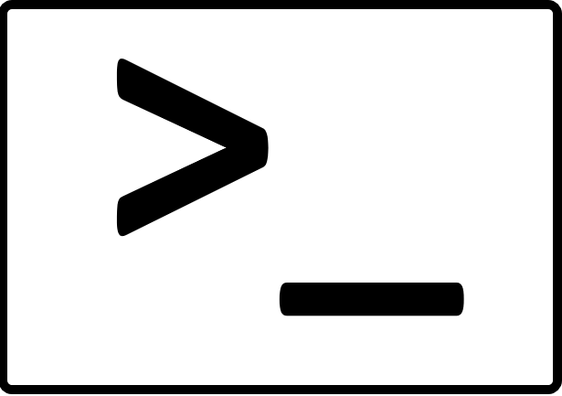

Ready to jump in? |
Want to learn more? |
Stuck on something? |
|
Installation & Getting Started
This page contains a bunch of tips that should aid you through the installation process.
|
Documentation
The complete documentation for JavaCC.
|
Lexer Writing Tips
Tips for writing good JavaCC lexical analyzer specs. This can also help you if you are getting 'code size too big' error message from javac when you compile the generated token manager.
|
|
Grammar Repository
A repository of JavaCC grammars is being maintained on the JavaCC home page. We urge you to contribute your grammars to this repository or to the JavaCC authors for the benefit of others.
|

Source Code
The complete source code for JavaCC on GitHub.
|
Here's how you can contact us and keep in touch with what's happening.
|